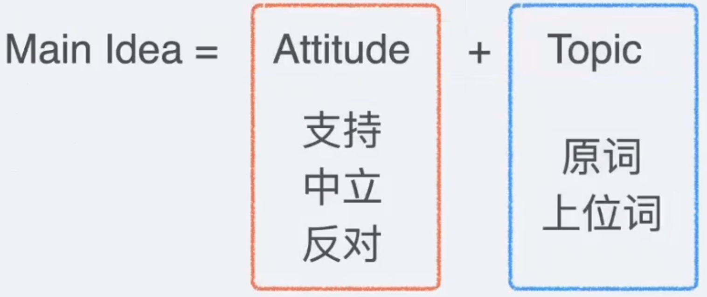
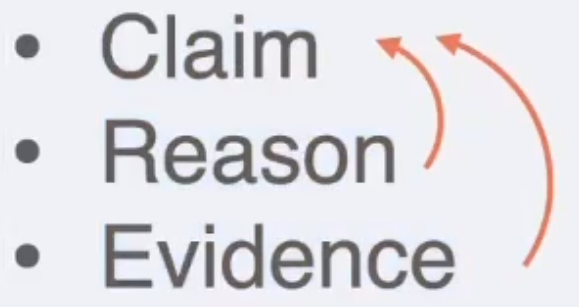
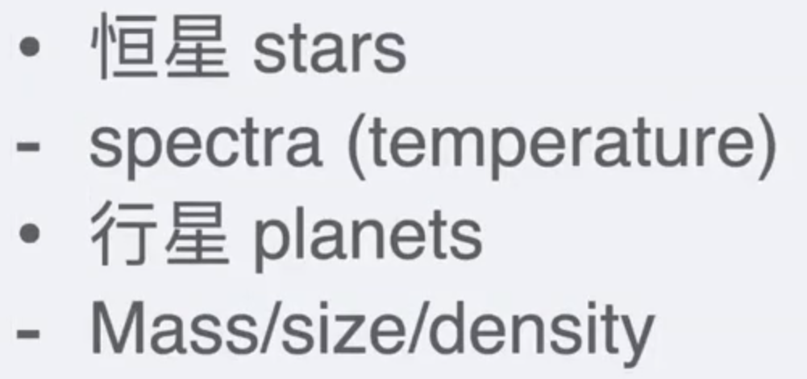

文章：文章重点和常考点
做题：题型分类和选项套路
逻辑：逻辑单题套路
学科：学科背景和做题知识
第一节课
GRE阅读长什么样子？
什么是主旨？
什么是文章视角？
什么是论证结构？
阅读常考的逻辑有哪些？
GRE阅读长什么样子
阅读所需要的技能
定位
同义改写
取同
取反
西施真的很美，东施恰恰相反。
东施什么样子？
标准化考试
能力考试和知识考试
GRE考试是能力考试，所有需要的内容都会在考试中给出。（常识例外）
GRE常见的常识：供需关系
正确答案和最佳答案
GRE考试不是选最佳答案，而是选择唯一正确的答案。
只有正确错误之分，没有好或者更好之分。
ps：一定是排除法，而不是比较法。
套路固定
文章固定
题型固定/问法固定
选项设置固定
文章题材
日常10%
人文20%
科学50%
社科20%
题型分类
单选
五选一
不定项选择
三选一
句子选择
无选项，在原文中选出一个句子
文章类型
文章类型是根据文章后面题目的数量确定的。
出题顺序
在ETS看来阅读分为：长阅读和短阅读两个类型。
总结
13个阅读题：shorter和longer对半开
每个题的分值一样，不论其难度如何；不定项选择全对才有分
S1：7个填空（8min）5个阅读（10min）=18min
S2：7个填空（7min）8个阅读（16min）=23min
短阅读是阅读之母
什么是主旨
main idea or topic
main idea = attitude + topic
attitude：positive/negative/neutral
topic：原词或者上位词

主旨哪里找
汉堡包结构：
第一句/第二句/最后一句——立论文
However之后——驳论文
Nature's Way, a chain of stores selling health food and other health-related products, is opening its next franchise in the town of Plainsville.
The store should prove to be very successful: Nature's Way franchises tend to be most profitable in areas where residents lead healthy lives, and clearly Plainsville is such an area.
Plainsville merchants report that sales of running shoes and exercise clothing are at all-time highs.
The local health club has more members than ever, and the weight training and aerobics classes are always full.
Finally, Plainsville's schoolchildren represent a new generation of potential customers: these schoolchildren are required to participate in a fitness-for-life program, which emphasizes the benefits of regular exercise at an early age.
Twenty years ago, Dr. Field, a noted anthropologist, visited the island of Tertia and concluded from his observations that children in Tertia were reared by an entire village rather than by their own biological parents.
However, my recent interviews with children living in the group of islands that includes Tertia show that these children spend much more time talking about their biological parents than about other adults in the village.
This research of mine proves that Dr. Field's conclusion about Tertian village culture is invalid and thus that the observation-centered approach to studying cultures is invalid as well.
The interview-centered method that my team of graduate students is currently using in Tertia will establish a much more accurate understanding of child-rearing traditions there and in other island cultures.
什么是文章视角
视角
视角：谁在说话
非作者视角：人名、理论、研究、被动态
作者视角：没有上述内容
视角和视角的关系
视角和视角之间的关系：
positive：赞同
neutral：可以视作一种补充关系
negative：反驳
视角的考法
An Irish newspaper editorial encouraging women to participate in the non-importation movement launched in Ireland in 1779 appears consistent with a perception that the political use of the consumer boycott originated in North America and spread eastwards across the Atlantic to Ireland. This is a view that most historians have concurred with. For example, T.H. Breen argued that the consumer boycott was a brilliantly original American invention. Breen did acknowledge that a few isolated boycotts may have taken place in other countries. However, Mary ODowd argues that from the late seventeenth century, Irish political discourse advocated for the nonconsumption of imported goods and support for home manufactures by women in ways that were strikingly similar to those used later in North America.
The passage is primarily concerned with
A. resolving a dispute
B. advocating a course of action
C. tracing the evolution of a practice
D. citing competing views of an issue √
E. chronicling a series of events
什么是论证结构
视角：谁在说话
论证结构：TA如何说话
区分事实和观点
Fact 客观事实 和 视角无关
Opinion 某个人的主观观点 从属于某个视角
今天三十八度
我热得受不了了
从观点到论证
人类的推理模式：
演绎推理
归纳推理
GRE只考演绎推理
最经典结构：
Claim
Reason
Evidence
背景信息：fact 不在 argument 里面
论点：opinion 是 argument 里面的 claim
论点+论据：argument = claim + reason + evidance

论证结构的考法
One reason researchers have long believed that Mars never enjoyed an extensive period of warm and wet climate is that much of the surface not covered by wind-borne dust appear to be composed of unweathered material. If water flowed for an entended period, researchers reasoned, it should have altered and weathered the volcanic minerals, creating clays or other oxidized, hydrated phases (minerals that incorporate water molecules in their crystal structure).
It turns out, though, that the scientists were not looking closely enough. New high-resolution mapping data and close-up surface studies have revealed clays and other hydrated minerals in many regions. The clay deposits are scattered all over, in ancient volcanic surfaces and heavily cratered highland regions, some of which have apparently been exposed by erosion only recently.
Consider each of the choices separately and select all that apply.
It can be inferred from the passage that the author would agree with which of the following statements regarding the reasoning discussed in the highlighted sentence?
A. It provides the basis for an explanation of why water on Mars has been difficult to find until recently.
B. It correctly identifies a consequence of water flowing on the Martian surface. √
C. It depends on a false assumption about how water and volcanic materials interact on Mars.
An Irish newspaper editorial encouraging women to participate in the non-importation movement launched in Ireland in 1779 appears consistent with a perception that the political use of the consumer boycott originated in North America and spread eastwards across the Atlantic to Ireland. This is a view that most historians have concurred with. For example, T.H. Breen argued that the consumer boycott was a brilliantly original American invention. Breen did acknowledge that a few isolated boycotts may have taken place in other countries. However, Mary ODowd argues that from the late seventeenth century, Irish political discourse advocated for the nonconsumption of imported goods and support for home manufactures by women in ways that were strikingly similar to those used later in North America.
In the context of the passage, the highlighted sentence serves to
A. qualify a point made in the preceding sentence √
B. correct an erroneous assumption
C. provide evidence in support of a perception cited in the opening sentence
D. provide a rationale for the view expressed in the following sentence
E. establish the popularity of a point of view
阅读常考的逻辑有哪些
常见逻辑
并列
递进
条件/假设
因果
转折
让步
承认自己有问题
承认别人有道理
让步后面要跟什么（转折）
GRE最喜欢的四个逻辑：
并列 A and B——原文是大并列结构，考不定项选择
因果 A but B
转折 Even if A， B
让步 Because A，→ B
第二节课
答案从哪里找
先看文章还是先看题
标准化考试：
所有答案都是在文中
有且仅有一个答案
文章和题目的道路非常固定
所需要的技能：
定位
同义改写
推荐：先看文章，再看题目
OG指出：保证有不少题目在不看完文章的情况下做不出来
定位方法
上策：读文章的时候预测考点
中策：题干中的关键词（名词的可能性最大，一般是上位词、年代、人名、地名）
下策：逐行逐句读？——短阅读-扫视、长阅读-放弃
对于上策：
关注主旨：main idea=topic+attitude
关注细节：
爱考逻辑：
取同、解释说明——并列、因果
取反、让步转折——让步、转折
选项特征
涉及到同义改写的问题。
这个表格在填空和阅读中都适用
进行进一步的完善之后是这样的：
偷换概念的三大套路：
过度改写——上海—（一个城市、中国）
范围扩大、程度加强：all、always、every、each、most、around the world
范围缩小、程度减轻：only、never、any、least、nowhere
混淆：原文中无关的内容出现在一个选项中
混淆因果：把没有关系的东西强加一个因果，或者把因果搞反了，或者是把A→B→C写成A→C→B
混淆修饰语和被修饰语
混淆比较：A好，B好→A比B好
完全相反
常见题型和解题技巧
分类
阅读所有题型的分类——按照内容分类：
主旨题做法
标志：central claim、main idea、main purpose、primarily concerned with
正确选项：attitude+topic
常见干扰选项
非作者观点（视角：区分文中XX的观点和本文作者的观点）
局部信息：只是detail而不是中心思想
常见干扰选项：
非作者观点
非中心思想
细节题、推断题做法
标志：
直接问文中的某个信息、东西（定位词可能是名词）
indicate、suggest、imply、infer
正确选项：
定位+同义改写
常见干扰选项
过、混、反
脑补必错——答案一定是原文中有的东西，不要脑补！！！——可能涉及到的推断只有三个
推断的三种情况：
对比
虚拟语气
三段论（取同两次）
取同：
简单题：和细节题一样、取同一次
难题：综合两处或者以上信息，取同多次
原文：所有鸟都是卵生的。企鹅是鸟。
题目：企鹅是卵生的吗？ （回答：是）
大前提：所有鸟都是卵生的。
小前提：企鹅是鸟。
目的题、功能题做法
正确选项：attitude+topic
attitude：支持、中立、反对
topic：自己是什么，服务于什么
fact：补充说明解释
claim=view=point=conclusion：作者赞同还是反对的
reason：支持
evidence：支持
定位问题：
看前后文，90%的情况是看前文。
干扰选项：
信息本身不等于信息的目的（答非所问）
信息本身哪个干扰选项往往和原文有细微差别。
词汇题
更像是填空的单空题：
把这个词挖掉，在下面几个词中选择一个填进去。
中/长阅读怎么做
中/长阅读和短阅读所需的能力都是一样的。
不要放弃单一信息就可以做出来的题
不要放弃定位词明显的题
可以放弃需要读懂全文，综合全文信息才可以作对的题
理解出题的套路：化被动为主动，理解这个题目为什么这样出
养成订正的习惯：不靠语感而是讲究证据
第三节课
逻辑单题的本质

考的是语文（逻辑放在语文里教）
如果有比较多的题翻译成中文还是不知道怎么做，建议放弃逻辑单题
Boldface
短阅读中的功能题
用短阅读中的技巧
区分Perspective
区分Fact/Claim/Reason/Evidence
需要看全文（某个视角下的观点和作者的观点是不是一致）
结论
类似于短阅读中的推断类型的题目
削弱、加强、评价
削弱
加强
评价
加强削弱的综合版本
成立则加强，不成立则削弱，或反之
选项一定是：X|Y|→
补充、解释
假设
充分条件：
A是B的充分条件
有A一定有B，有B不一定有A
必要条件：
A是B的必要条件
A不一定有B，有B一定有A
既不充分也不必要条件
如果A是B的既不充分也不必要条件
有A不一定有B，有B不一定有A
充分必要条件
A是B的充要条件
有A一定有B，有B一定有A
Assumption：必要条件
正确选项：取反后，原文不成立
干扰选项：加强(加强不是假设)
总结
第四节课
学科背景和做题知识
生物学常考内容+例文
first-hand
second-hand
倒推法——family tree
模拟法——lab，island/land 性成熟期非常短
进化论
地质/环境常考内容+例文
自然力
人为力
天文常考内容+例文
太阳系
天体类型

天体运动
经济/心理常考内容+例文
历史/政治常考内容+例文
艺术/文化常考内容+例文
单词整理
生物
动物
动物类型
Invertebrate: 没有脊椎的动物，例如昆虫、蠕虫等。
Vertebrate: 有脊椎的动物，包括鱼类、两栖类、爬行类、鸟类、哺乳类和灵长类等。
Amphibian: 两栖动物，如青蛙和蝾螈。
Reptile: 爬行动物，例如蜥蜴、蛇和乌龟。
Herbivore: 食草动物，主要以植物为食的动物，例如牛、羊和兔子。
Carnivore: 食肉动物，以其他动物为食的动物，例如狮子、老虎和狼。
Mammal: 哺乳动物，拥有乳汁喂养幼崽的动物，例如狗、猫、人类和老鼠。
Primate: 灵长类动物，包括猴子、猩猩和大猩猩等。
动物行为
吃：A prey on B=feed on;prey=victim;predator;forage
Predator: 捕食者
Forage: 觅食
生：mate, reproduce, raise, spawn, lay, incubate, clutch
Mate: 交配
Reproduce: 繁殖
Raise: 养育
Spawn: 产卵
Lay: 下蛋
Incubate: 孵化
Clutch: 一窝（通常指鸟类的）
动：hibernate, migrate, camouflage, mimic
Hibernate: 冬眠
Migrate: 迁徙
Camouflage: 伪装
Mimic: 模仿
常见动物
Moose - 麋鹿
Guppy - 小鱼
Otter - 水獭
Beaver - 海狸
Gorilla - 大猩猩
Chimpanzee - 黑猩猩
Antelope - 羚羊
Alligator - 短吻鳄（鳄鱼）
Caterpillar - 毛毛虫
Moth - 蛾子
植物
植物行为
Photosynthesis - 光合作用
Symbiosis - 共生
Defoliate - 脱叶
Blossom - 开花
Germinate - 发芽
Yield - 产量/收获
常见植物
Oak 橡树
maple 枫树
algae 藻类
moss=lichen 地衣
crop 庄稼
maize 玉米
cactus 仙人掌
微生物
四大致病微生物
Microorganism, microbe 微生物，微小生物
Virus, bacteria, fungi, parasite 病毒，细菌，真菌，寄生虫
Germ (the germ of an idea) 细菌（一个想法的萌芽）
抗微生物
antibiotic 抗生素，抗菌素
vaccine 疫苗；（计算机）杀毒软件
生理
hormone 激素，荷尔蒙；人造激素；性激素
immune 免疫的；不受影响的；免除的，豁免的
enzyme 酶
生态
biodiversity 生物多样性（维持着生态环境平衡的大量各种生物的共存）
food chain 食物链：生态系统中生物按照捕食顺序排列的一种组织形式，每个生物都以比它更低层次的生物为食物来源。
endangered species 濒危物种：濒临灭绝的生物种类，需要特殊保护以维持其生存。
preservation 保护，维护；保留，维持；（食物的）保存，保藏
地质地理
地球构造
内部构造
core 地核，天体的核心
mantle 地幔
crust 地壳
layer 通常翻译为“层”。这个词用来描述地球或其他天体结构中的一层，比如地壳、地幔和地核这样的不同层次。
表面构造
plain （大）平原
plateau 高原
valley 山谷；流域；溪谷
basin 盆地，海盆；内港，内湾
canyon （两边为峭壁、谷底通常有溪流的）峡谷
channel 河床；海峡
peninsula 半岛
island 岛屿
火山
volcano 火山
eruption 火山喷发；（战争、怒气等的）爆发
magma [地质]岩浆
lava （火山）熔岩，岩浆；火山岩
volcanic 火山的，火山引发的；（感情或情绪）猛烈的，易突然发作的
ash 灰；灰烬，废墟；骨灰，遗骸
crater （撞击或爆炸形成的）坑，弹坑；火山口；穴，洞
vent 火山口
hot spots 火山地貌：地球上上地幔的一个地方，热的岩浆从下地幔上涌，穿过地壳，通常在构造板块的内部形成火山地貌。
hot plume 热焰：指高温下产生的火焰或烟雾。
地震
seismic wave 地震波：指地震或地下爆炸引起的几种形式的振动波，它们通过地球传播。
epicenter 震中；中心
magnitude 震级；规模，大小
intensity 强烈，剧烈；（光、声音等的）强度
fault 断层
地理知识
七大洲
以下是七大洲的英文和中文对照：
Asia - 亚洲
Europe - 欧洲
Africa - 非洲
North America - 北美洲
South America - 南美洲
Antarctica - 南极洲
Australia - 大洋洲
四大洋
Pacific Ocean - 太平洋
Atlantic Ocean - 大西洋
Indian Ocean - 印度洋
Arctic Ocean - 北冰洋
术语
equator 赤道
longitude 经度，经线
latitude 纬度；纬度地区
elevation 高度，海拔
altitude 海拔高度；高地；（天体在地平线上的）地平纬度
污染和环保
污染
global warming
fossil oil=petroleum 石油，原油
coal 煤；煤炭工业
carbon dioxide 二氧化碳
资源
drain
alternative sources 替代资源：指在能源、食品、材料等领域中，用于替代传统资源的可持续发展的替代品或方法。
sustainability 持续性，能维持性
desertification （土壤）荒漠化；沙漠化
deforest 砍伐树林
acid rain酸雨
soot煤烟，烟灰
sewage污水，污物
purification净化；提纯；涤罪
天文
太阳系
Mercury - 水星
Venus - 金星
Earth - 地球
Mars - 火星
Jupiter - 木星
Saturn - 土星
Uranus - 天王星
Neptune - 海王星
请注意，根据国际天文学联合会（IAU）在2006年的定义，冥王星（Pluto）不再被视为太阳系的主要行星，而是被归类为“矮行星”（dwarf planet）。因此，上述列表仅包括传统意义上的八大行星。
行星的种类
terrestrial planet（iron，rock，atmosphere）地球型行星：太阳系内的四颗内行星之一，包括水星、金星、地球和火星。与外行星相比，这些行星的特点是密度较高，表面较为坚硬，且主要由岩石和金属构成。
gas giant（土星，木星：氢气氦气）
ice giant（海王星，天王星）
太阳：
fusion融合，结合；核聚变
sunspots太阳黑子；雀斑
solar flare太阳耀斑：太阳表面的一个小区域突然暴发出能量的短暂爆发，也称为耀斑。
solar wind太阳风：从太阳表面不断喷发出来并穿过星际空间的等离子体。
天体类型
star；恒星
planet：行星
moon=satellite：卫星
dwarf矮星
dwarf
n.（神话中有魔法的）小矮人；侏儒，矮子；矮星
v.使显得矮小，使相形见绌
adj.矮小的，矮种的
asteroid小行星
supernova[天] 超新星
cluster星团
comet彗星
meteor流星；大气现象
天体运动
twinkle闪烁，闪耀
illuminate照射，照亮
rotate旋转
revolve旋转
impact冲击，撞击
社科
经济发展和萧条
boom and bust
曾经繁荣而后衰落的经济周期，通常指市场或整个经济出现高价格，随后出现价格崩溃、生产下降和生产者破产的情况；繁荣后随之而来的是经济衰退
内部原因：
supply and demand
供求关系：指可供人们购买的商品和服务的数量与人们想要购买的商品和服务的数量之间的比较。
price 价格
外部原因：
政治
科技
人力
生态
→市场自己调节还是政府干预
经济问题
inflation通货膨胀，通胀率
deflation通货紧缩
business cycle经济周期：经济活动的周期，通常包括衰退、复苏、增长和衰退等阶段。
economic cycle经济周期：经济活动在一定时间内的波动和循环。
经济理性人
economic man
经济人：一个理论上的人物，他在经济学中被认为是一个完全理性的个体，总是追求最大化自己的利益。
行为经济学 behavioral economics
行为经济学：一门研究人们在经济决策中的行为和心理因素的学科。
先天后天
natural 天然的，非人为的
innate 先天的，固有的；（信仰）根深蒂固的
inherent 内在的，固有的
inborn 天生的
instinctive 本能的，直觉的；天生的
gene 基因，遗传因子
acquired[医]后天的；已获得的；已成习惯的
learned后天的，习得的
trained培训；训练过的，受过培训的
experience经历，往事
environment自然环境，生态环境
强化惩罚
positive reinforcement（给糖）
negative reinforcement（不电击）
positive punishment（电击）
negative punishment（不给糖）
历史
世界史
stone age
石器时代：指人类历史上最早的一个时期，以使用石器为特征。与中石器时代、新石器时代、旧石器时代相对比。
原始、过时的阶段：指某个人类机构或领域被认为是原始、过时或过时的阶段。
原始、过时的、不先进的：指思想或技术在当前被接受的标准下被认为是原始、过时或不先进的。
paleolithic 旧石器时代的（多人种）
neolithic [古] 新石器时代的；早先的（homo sapiens）
ancient greek 古希腊
rome 罗马（意大利首都）
Christianity 基督教；基督教徒的品性
Catholicism 天主教；天主教义
middle age 中世纪
renaissance 文艺复兴（时期）（the Renaissance）；文艺复兴文化，文艺复兴风格（Renaissance）
nation-state 单一民族国家
colonize 在……开拓殖民地，移民于殖民地；将（场所，产业）据为己用；移植于，大批繁殖于；<美>从他地非法把选民移入
industrialization 工业化
体制建设
founding document 创始文件：指一个国家或组织的最初的宪法或法律文件，规定了其社会制度、政府机构、公民权利和义务等基本内容。
constituttion 宪法，章程
amendment（the bill of right） 修正，修订之处；美国宪法修正案（Amendment）；（对文件或计划的）修改
confederation 联盟，同盟；加拿大联邦
federation 联邦政府，联邦；联合会；结成联邦（或联盟）
"Confederation" 和 "Federation" 这两个词在中文中通常都被翻译为“联邦”，但它们在政治结构上有所区别。
Confederation（联盟）：
联盟是一个由若干个独立国家为了某个共同目的而组成的松散联盟。
成员国保留有很大的主权和独立性，联盟的中央政府权力有限。
联盟的决定通常需要所有成员国的一致同意才能执行。
如果成员国选择退出，联盟不会对其实施强制措施。
例如，历史上的瑞士同盟（Swiss Confederation）和当前的阿拉伯联盟（Arab League）。
Federation（联邦）：
联邦是一个由若干个州、省、地区或其他政治实体组成的统一国家，这些实体在一定程度上分享主权。
联邦政府和成员政府之间有明确的权力分配，通常联邦政府拥有外交、国防等国家级权力。
联邦的成立通常需要一个宪法，用以规定中央政府和成员政府之间的权力分配和关系。
成员实体（如州或省）没有权力单方面退出联邦。
例如，美国、德国和印度都是联邦制国家。 总的来说，"Confederation" 强调的是成员的独立性和联盟的松散性，而 "Federation" 则强调中央政府和成员政府之间的权力共享和更紧密的统一性。
congress 国会，议会；代表大会；美国国会（Congress）
house of representative 众议院：一个国家立法机构的组成部分，通常由各选区选出的代表组成，负责制定和修改法律。
senate 参议院；大学理事会，大学评议会；（古罗马的）元老院
two-party system 两党制度
bipartisanship 两党合作；两党制
democrat （美国）民主党党员；民主主义者
republicans 共和党，共和党员（republican 的复数形式）
separation of powers 权力分立：一种政治制度，将政府的权力分为立法、行政和司法三个部分，以保持政府权力的平衡和相互制衡。
executive 有执行权的
legislation 制订法律
judicial 法庭的，司法的
check and balance 制衡：通过独立组织的相互监督和限制来防止滥用权力。
代议制民主
suffrage 选举权；投票；参政权；代祷；赞成票
representative 代议制的；代表，代理人；代表他人者
vote 投票选举，投票表决；投票评选
black suffrage：1870 15th amendment 黑人选举权
人权
投票权是最重要的人权
白人、男人、有钱人
女权：
the first wave（1848-1920，财产权和投票权）
the second wave（1960s，工作权）
艺术
现实非现实
现实：
naturalism
realism
imitation
超现实：
impressionism
dadasim
symbolic
surrealism
contemporary art
avant-garde
宗教人性
the renaissance
middle age
理性感性
emotional
emotive
sentimental
rational
reason
moderate
temperate
考古
测算物品年代、传播路径
考察物品和文明的关系
考察物品真伪、渊源
autograph
original
replica